# Pfad zur Excel-Datei erstellen
pfad_mieten <- here("Mieten.xlsx")
# Daten einlesen
mieten <- read_excel(pfad_mieten)Modellierung der Kaltmiete
Vergleich Frankfurt am Main und Leipzig
Einleitung
In dieser Fallstudie sollen die Kaltmieten der beiden Städte Frankfurt am Main und Leipzig miteinander verglichen und modelliert werden. Ziel ist es, die verschiedenen möglichen Einflussfaktoren auf die Kaltmiete in den jeweiligen Städten zu bestimmen und zu analysieren und anschließend eine Modellierung des Preises der Kaltmiete zu erstellen.
Zu Beginn wird auf die Datenerhebung eingegangen. Hier wird erläutert, woher die verarbeiteten Daten stammen und unter welchen Bedingungen die Daten erhoben wurden. Mit der explorativen Datenanalyse sollen dann die erhobenen Daten beschrieben und veranschaulicht werden. Dabei wird sowohl die Vorverarbeitung der Daten beschrieben als auch eine Datenanalyse anhand von Grafiken und entsprechenden Interpretationen durchgeführt. Ziel ist unter anderem herauszufinden, welche der erhobenen Variablen den größten Einfluss auf die Kaltmiete einer Stadt haben und wie groß eventuelle Unterschiede zwischen den Mietpreise der beiden Städten sind. Der zweite zentrale Teil der Arbeit ist die Modellierung. Hier wird die Kaltmiete modelliert, das heißt durch ein selbst erstelltes statistisches Modell abgebildet. Anschließend wird das Modell interpretiert. Abschließend werden die Ergebnisse in der Zusammenfassung aufgearbeitet und präsentiert.
Datenerhebung
Die Datenerhebung fand ausschließlich über den Online-Marktplatz für Wohnungen und Häuser ImmobilienScout24 statt. Die untersuchten Objekte wurden dabei auf den Immobilientyp Wohnung beschränkt, was als Suchkriterium in der Suchleiste des Portals eingestellt werden kann. Weitere Suchkriterien haben sich auf den Ort, in diesem Fall Frankfurt am Main und Leipzig, und auf den Typ Mieten (anstatt Kaufen oder Bauen), beschränkt. Weitere Kriterien wie Anzahl der Zimmer, Fläche oder einem maximalen Preis wurden auf den Standardeinstellungen belassen. Anschließend wurden je Ort der Reihe nach bis zu 45 Objekte in der von ImmobilienScout24 generierten Reihenfolge überprüft und in eine Excel-Datei aufgenommen, die im Folgenden als Basis für die Auswertung dient.
Aufgenommen in die Datenbasis wurden dabei die folgenden Variablen: der Ort, die Kaltmiete in Euro, die Wohnfläche in Quadratmetern, das Angebot eines Parkplatz, die Etage, Anzahl der Zimmer, Vorhandensein eines Balkon, das Baujahr des Objektes sowie der entsprechende Link zur Anzeige und dessen Abrufdatum.
Für die nachfolgenden Auswertungen und Analysen lesen wir zunächst die Excel-Datei ein:
Über die Ausgabe der ersten sechs Eintrage erhalten wir einen Einblick in die Daten:
# Obere 6 Beobachtungen
head(mieten)# A tibble: 6 × 12
Ort Kaltmiete Wohnflaeche Parkplatz Etage Zimmer Balkon Einbaukueche Heizung
<chr> <dbl> <dbl> <chr> <dbl> <dbl> <chr> <chr> <chr>
1 Fran… 1800 70 ja 1 2 ja ja Fußbod…
2 Fran… 1500 60 ja 1 1 ja ja Zentra…
3 Fran… 2650 146. ja 1 3 ja ja Fußbod…
4 Fran… 1500 72 nein 1 2 ja ja Fußbod…
5 Fran… 2000 113. ja 3 4 ja ja Fußbod…
6 Fran… 1700 84.8 ja 3 3 ja ja Fußbod…
# ℹ 3 more variables: Baujahr <dbl>, Link <chr>, Abrufdatum <dttm>Explorative Datenanalyse
Zu Beginn der explorativen Datenanalyse wird geprüft, ob die in der Datenquelle enthaltenen Daten auf eine bestimmte Art und Weise vorverarbeitet oder angepasst werden müssen. Hierzu wird zunächst mit str(mieten) die Struktur des Datensatzes betrachtet.
str(mieten)tibble [98 × 12] (S3: tbl_df/tbl/data.frame)
$ Ort : chr [1:98] "Frankfurt" "Frankfurt" "Frankfurt" "Frankfurt" ...
$ Kaltmiete : num [1:98] 1800 1500 2650 1500 2000 1700 1480 2800 1080 2600 ...
$ Wohnflaeche : num [1:98] 70 60 146 72 113 ...
$ Parkplatz : chr [1:98] "ja" "ja" "ja" "nein" ...
$ Etage : num [1:98] 1 1 1 1 3 3 9 5 4 3 ...
$ Zimmer : num [1:98] 2 1 3 2 4 3 2 3 2 4 ...
$ Balkon : chr [1:98] "ja" "ja" "ja" "ja" ...
$ Einbaukueche: chr [1:98] "ja" "ja" "ja" "ja" ...
$ Heizung : chr [1:98] "Fußbodenheizung" "Zentralheizung" "Fußbodenheizung" "Fußbodenheizung" ...
$ Baujahr : num [1:98] 2022 1970 2017 2021 2015 ...
$ Link : chr [1:98] "https://www.immobilienscout24.de/expose/136299839?referrer=RESULT_LIST_LISTING&searchId=69ea3df3-e89a-3ab4-867f"| __truncated__ "https://www.immobilienscout24.de/expose/147138109?referrer=RESULT_LIST_LISTING&searchId=69ea3df3-e89a-3ab4-867f"| __truncated__ "https://www.immobilienscout24.de/expose/148020107?referrer=RESULT_LIST_LISTING&searchId=69ea3df3-e89a-3ab4-867f"| __truncated__ "https://www.immobilienscout24.de/expose/148760443?referrer=RESULT_LIST_LISTING&searchId=85c7de5d-6a12-34e0-852a"| __truncated__ ...
$ Abrufdatum : POSIXct[1:98], format: "2023-12-28" "2023-12-28" ...Zu sehen ist hier, dass im Datensatz sowohl kategoriale nominale Variablen wie Heizung oder Zimmer, als auch metrische verhältnisskalierte Variablen wie Kaltmiete oder Wohnflaeche auftreten. Um nicht nur den Gesamtpreis der Kaltmiete zu betrachten, wird der Quadratmeterpreis mit in den Datensatz aufgenommen. Zudem wird mit dem Befehl subset der Datensatz nach den jeweiligen Städten unterteilt, um im weiteren Verlauf der Analyse stadtspezifische Aussage treffen zu können.
mieten <- mieten |>
mutate(ppqm = Kaltmiete / Wohnflaeche)
miete_ffm <- subset(mieten, Ort == "Frankfurt")
miete_lpz <- subset(mieten, Ort == "Leipzig")Mithilfe der Funktion mean kann der Mittelwerte der Kaltmieten und Quadratmeterpreise in beiden Städten betrachtet werden.
mean(~ Kaltmiete, data = miete_ffm)[1] 1652.821mean(~ Kaltmiete, data = miete_lpz)[1] 1019.461mean(~ ppqm, data = miete_ffm)[1] 19.83162mean(~ ppqm, data = miete_lpz)[1] 11.7449Der Mittelwert für die Kaltmiete liegt in Frankfurt bei 1.652,82€ und damit mehr als 600€ über dem Durchschnitt von Leipzig von 1.011,64€. Der mittlere Quadratmeterpreis liegt in Frankfurt bei 19,83€, in Leipzig liegt er bei 11,74€.
Wohnfläche
Zuerst wird der Zusammenhang zwischen Kaltmiete und Wohnflaeche betrachtet. Bei zwei metrisch verhältnisskalierten Variablen bietet sich dafür der Scatterplot an.
gf_point(Kaltmiete ~ Wohnflaeche, data = mieten)
Grundsätzlich lässt sich ein positiver Zusammenhang zwischen Kaltmiete und Wohnflaeche erkennen, wobei die Streuung der Kaltmiete mit zunehmender Wohnfläche zunimmt. Das Diagramm wird nun um die visuelle Darstellung des Ortes ergänzt, um die stadtspezifischen Ausprägungen erkennen zu können. Der Code wird dafür um den Zusatz color = ~ Ort erweitert:
gf_point(Kaltmiete ~ Wohnflaeche, data = mieten, color = ~ Ort)
Zu sehen ist hier, dass die erfassten Mieten im Datensatz in Frankfurt tendenziell höher sind als in Leipzig. Bei vergleichbarer Wohnfläche liegen die gefärbten Punkte für Frankfurt stets über den Punkten von Leipzig. Betrachtet man statt der gesamten Kaltmiete den Quadratmeterpreis ppqm, entsteht folgende Darstellung:
gf_point(ppqm ~ Wohnflaeche, data = mieten, color = ~ Ort)
Auch der Quadratmeterpreis liegt in Frankfurt tendenziell über dem Quadratmeterpreis von Leipzig. Nur wenige Beobachtungen weisen bei vergleichbarer Wohnfläche in beiden Städten einen ähnlichen Quadratmeterpreis auf.
Um den Eindruck der Mietunterschiede zu festigen, kann ein Boxplot verwendet werden.
gf_boxplot(Kaltmiete ~ Ort, data = mieten)
Der Boxplot zeigt, dass der Median für die Kaltmiete in Frankfurt deutlich über dem Median von Leipzig liegt. Zudem ist der Interquartilsabstand bei Frankfurt größer als bei Leipzig, und die Whisker sind bei Frankfurt ebenfalls länger. Für Leipzig gibt es jedoch mehr Ausreißer, nämlich 4, verglichen mit den 2 Ausreißern von Frankfurt. Für den Quadratmeterpreis ergibt sich folgende Darstellung:
gf_boxplot(ppqm ~ Ort, data = mieten)Die grundsätzliche Aussage der Kaltmiete gilt entsprechend auch für den Quadratmeterpreis: In Frankfurt ist der Median des Quadratmeterpreises deutlich höher als in Leipzig. Die Whisker sind für beide Städte nun kürzer, und die Anzahl der Ausreißer hat sich verändert: In Frankfurt gibt es nun 3 Ausreißer, in Leipzig nur noch einen.
Heizung
Es sollen nun auch die weiteren Variablen untersucht werden, angefangen mit der Variablen Heizung. Um die verschiedenen Ausprägungen zu vergleichen und ihre absolute Häufigkeit darzustellen, eignet sich ein Säulendiagramm:
gf_bar( ~ Heizung, data = mieten, fill = ~ Ort, position = position_dodge()) +
theme(axis.text.x = element_text(angle = 90))Das Säulendiagramm zeigt, dass die Fußbodenheizung in Frankfurt am weitesten verbreitet ist, gefolgt von der Zentralheizung und der Fernwärme. In Leipzig ist die Zentralheizung am weitesten verbreitet, gefolgt von der Fußbodenheizung und der Fernwärme. In einigen Beobachtungen, häufiger in Leipzig als in Frankfurt, wurde der Heizungstyp nicht angegeben.
Mit einem Punktdiagramm kann der Zusammenhang zwischen der Heizungsart und der Kaltmiete betrachtet werden.
gf_point(Kaltmiete ~ Heizung, data = mieten, color = ~ Ort, position = position_dodge()) +
theme(axis.text.x = element_text(angle = 90))Warning: Width not defined
ℹ Set with `position_dodge(width = ...)`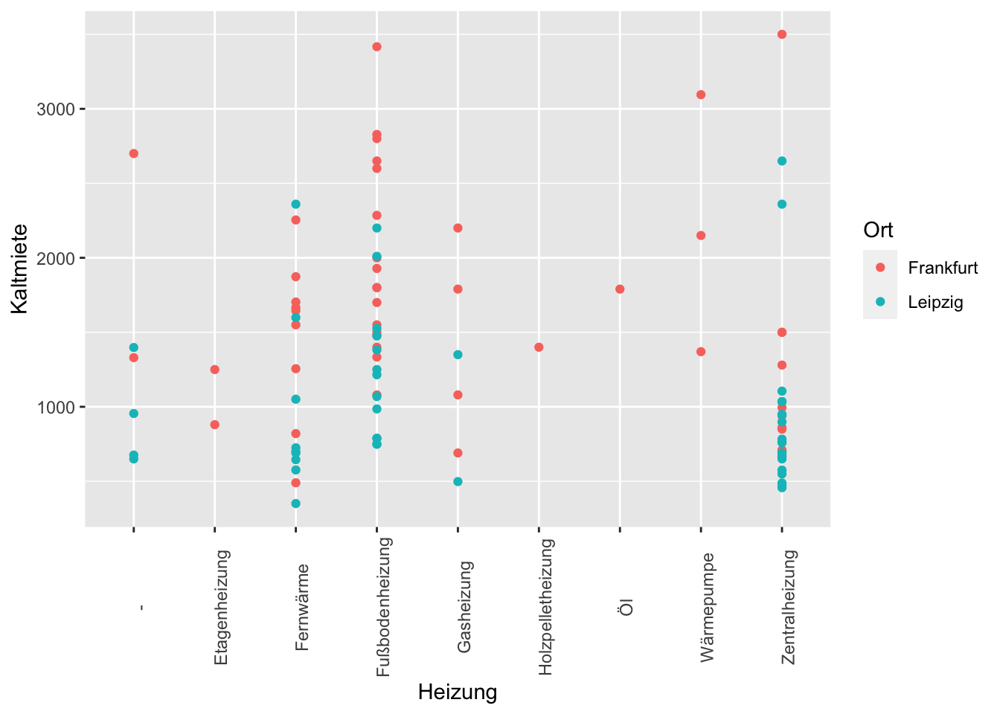
Die teuersten Wohnungen in Frankfurt haben eine Zentral- oder Fußbodenheizung, die günstigste Wohnung in Frankfurt wird mit Fernwärme geheizt. In Leipzig ist wie bereits festgestellt die Verteilung der Heizungstypen eine andere: Hier hat die teuerste Wohnung ebenfalls eine Zentralheizung und die günstigste Wohnung wird mit Fernwärme beheizt, jedoch sind auch bei der Zentralheizung viele der günstigen Wohnungen zu finden.
gf_point(ppqm ~ Heizung, data = mieten, color = ~ Ort, position = position_dodge()) +
theme(axis.text.x = element_text(angle = 90))Warning: Width not defined
ℹ Set with `position_dodge(width = ...)`
Durch die Betrachtung des Quadratmeterpreises wird erneut erkennbar, dass dieser in Frankfurt höher ist als in Leipzig. Jedoch sind für die häufigsten Heizungstypen (Fußbodenheizung in Frankfurt, Zentralheizung in Leipzig) keine signifikanten Unterschiede im Quadratmeterpreis erkennbar. Innerhalb der Heizungstypen gibt es stets eine Streuung, sodass in Frankfurt Wohnungen mit Fußbodenheizung einen Quadratmeterpreis zwischen ca. 17€ und 27€ aufweisen, in Leipzig variiert der Quadratmeterpreis bei Wohnungen mit Zentralheizung zwischen ca. 5€ und 15€.
Baujahr
Bei der Variablen Baujahr handelt es sich hier um eine diskrete Variable. Aufgrund der Vielzahl an verschiedenen Jahren im Datensatz eignet sich jedoch die Verwendung des tatsächlichen Baujahres nicht, da die Darstellungen sonst sehr unübersichtlich werden. Stattdessen soll eine Klassifizierung in “alt - mittel - neu” vorgenommen werden, um die Baujahre zusammenzufassen.
mieten <- mieten %>%
mutate(Baujahrgruppe = case_when(
is.na(Baujahr) ~ "NA",
as.integer(Baujahr) < 1970 ~ "alt",
between(as.integer(Baujahr), 1970, 2000) ~ "mittel",
TRUE ~ "neu"
))
gf_bar( ~ Baujahrgruppe, data = mieten, fill = ~ Ort, position = position_dodge())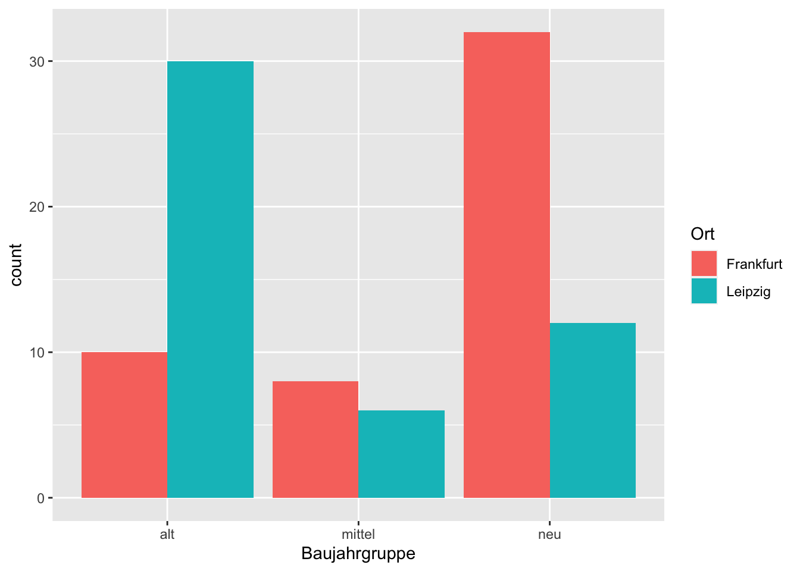
Im Säulendiagramm ist erkennbar, dass die meisten Beobachtungen in Frankfurt in die Kategorie neu (Baujahr > 2000) fallen, gefolgt von alt (Baujahr < 1970) und mittel. In Leipzig dominieren die Beobachtungen mit alt, dann kommen neue Baujahre. Es treten in beiden Städten nur wenige Beobachtungen mit Baujahren zwischen 1970 und 2000 auf.
gf_boxplot(Kaltmiete ~ Baujahrgruppe, data = mieten, color = ~ Ort)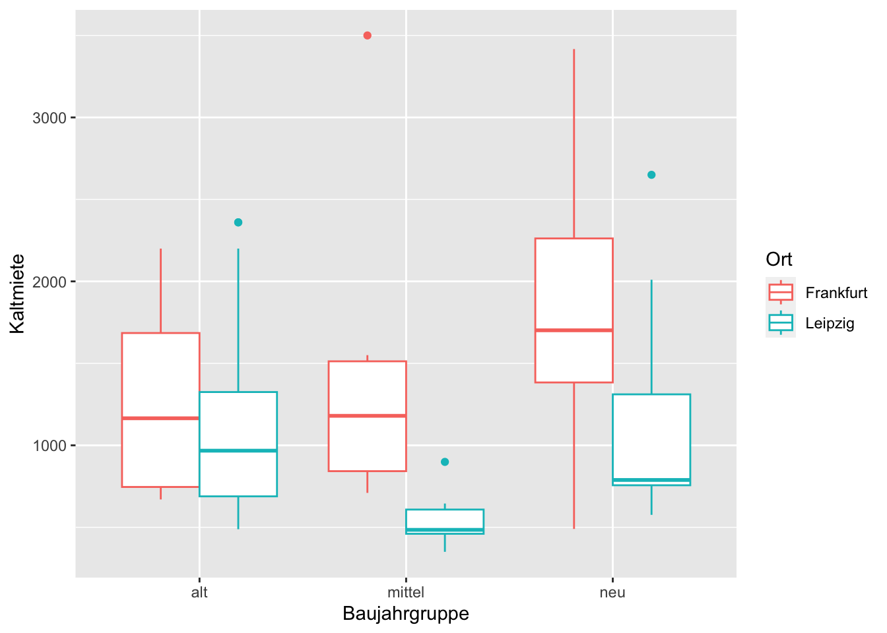
Der Boxplot zeigt Unterschiede im Median der Kaltmieten je Ort, abhängig vom Alter der Wohnung. Bei alten Wohnungen ist der Median beider Städte noch am nächsten beieinander (ca. 1.100€ in Frankfurt und ca. 1.000€ in Leipzig), wobei in Frankfurt das obere und untere Quartil weiter auseinander liegen und in Leipzig ein Ausreißer existiert. Für Wohnungen mittleren Alters ist die Box für Leipzig sehr klein, da hier nur wenige Beobachtungen vorliegen und diese auch kaum Streuung aufweisen. In Frankfurt hingegen liegt mehr Streuung vor, die Box ist deutlich größer und der Median liegt mit ca. 1.250€ deutlich über dem von Leipzig (ca. 500€). Zudem gibt es einen Ausreißer in Frankfurt und in Leipzig. Bei Neubauten ist die größte Differenz im Median erkennbar: Frankfurt liegt bei ca. 1.750€, Leipzig bei ca. 800€. Zudem sind die Whisker für Frankfurt deutlich länger, Leipzig weist einen Ausreißer auf.
gf_boxplot(ppqm ~ Baujahrgruppe, data = mieten, color = ~ Ort)Verwendet man auch hier den Quadratmeterpreis statt der Kaltmiete, ergibt sich ein tendenziell ähnliches Bild: Unabhängig vom Baujahr liegt der Median in Frankfurt über dem von Leipzig. Jedoch gibt es nun keine Ausreißer mehr in Leipzig, in Frankfurt je einen für Altbauten und Wohnungen mittleren Alters und zwei Ausreißer für Neubauten. Bei Altbauten liegen das obere und untere Quartil in Frankfurt weiter auseinander als in Leipzig, ebenso bei Neubauten. Für mittelalte Wohnungen ist der Interquartilsabstand in Leipzig höher. In Frankfurt ist der Median bei Neubauten am höchsten und in mittelalten Wohnungen am niedrigsten. In Leipzig verhält es sich ebenso.
Parkplatz
Zur Analyse des Einflusses der Variable Parkplatz eignen sich Boxplot Diagramme. Um sowohl den Einfluss auf die Gesamtkaltmiete als auch auf den Quadratmeterpreis zu betrachten, wurden hier entsprechend zwei entsprechende Boxplots ausgegeben.
gf_boxplot(Kaltmiete ~ Parkplatz, data = mieten, color = ~ Ort)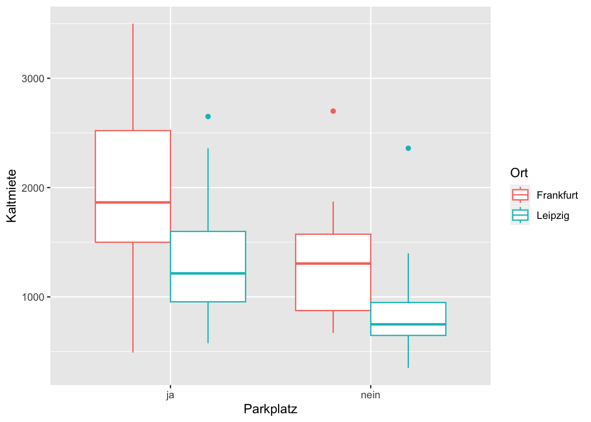
gf_boxplot(ppqm ~ Parkplatz, data = mieten, color = ~ Ort)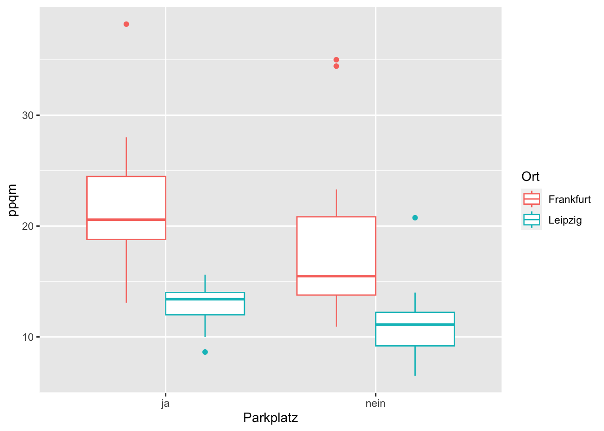
favstats(ppqm ~ Parkplatz, data = mieten) Parkplatz min Q1 median Q3 max mean sd n
1 ja 8.640082 13.78164 18.18806 21.75581 38.20988 18.29953 5.817689 43
2 nein 6.501933 10.81151 12.25070 15.44909 35.00000 13.97193 5.740369 55
missing
1 0
2 0tally(Ort ~ Parkplatz, data = mieten) Parkplatz
Ort ja nein
Frankfurt 26 24
Leipzig 17 31In beiden Boxplots ist zu erkennen, dass sowohl der Gesamtpreis der Kaltmiete als auch der Quadratmeterpreis bei Wohnungen mit Parkplatz höher ist.
Der grundsätzliche Mietpreisunterschied zwischen den Städten zeigt sich hier sowohl bei Wohnungsangeboten mit als auch ohne Parkplatz. So zeigt der Boxplot eine deutlich höhere Preisspanne in Frankfurt für Wohnungen ohne Parkplatz, insbesondere aber für Wohnungen mit Parkplatz. Im vorliegenden Datensatz ist die Verteilung der Wohnungen mit und ohne Parkplatz in Frankfurt relativ gleich verteilt (26:24). In Leipzig gibt es mehr Wohnungen ohne Parkplatz (17:31).
Balkon
Um den Einfluss der Variable Balkon zu untersuchen, wurde ebenfalls ein Boxplot Diagramm genutzt:
gf_boxplot(Kaltmiete ~ Balkon, data = mieten, color = ~ Ort)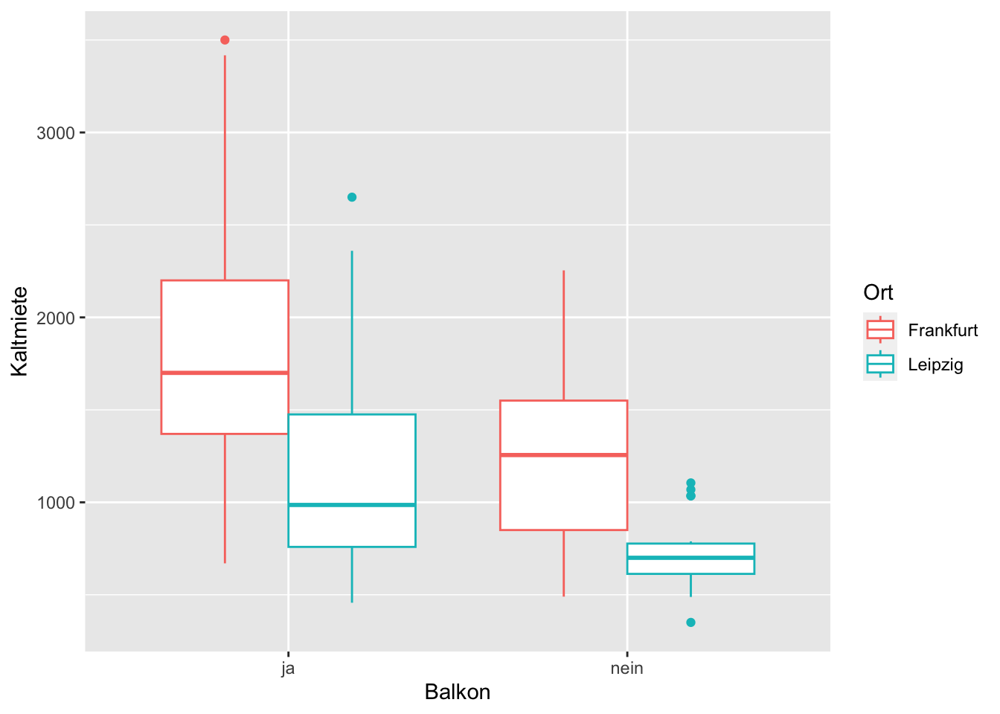
gf_boxplot(ppqm ~ Balkon, data = mieten, color = ~ Ort)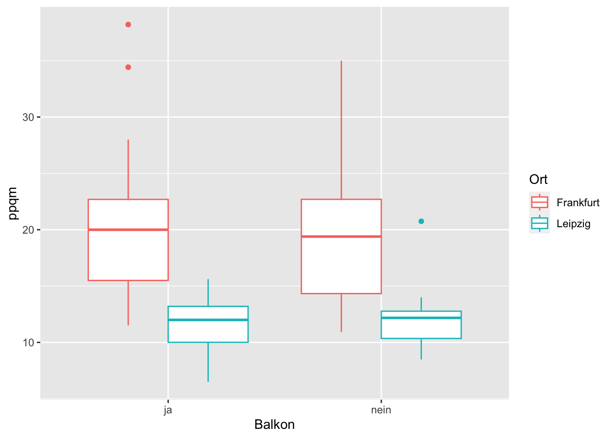
favstats(ppqm ~ Balkon, data = mieten) Balkon min Q1 median Q3 max mean sd n
1 ja 6.501933 12.00896 15.09831 20.02829 38.20988 16.30715 6.228062 66
2 nein 8.491219 11.54896 12.76961 17.82299 35.00000 14.97076 5.938158 32
missing
1 0
2 0tally(Ort ~ Balkon, data = mieten) Balkon
Ort ja nein
Frankfurt 37 13
Leipzig 29 19Der erste Boxplot zeigt, dass Wohnungen mit Balkon generell etwas teurer sind. Da der Balkon auch mit 25% in die Gesamtwohnfläche eingeht, wird im zweiten Boxplot auch der Quadratmeterpreis betrachtet. Auch hier zeigt sich ein Zusammenhang zwischen Balkon “Ja” und höherer Kaltmiete, was darauf schließen lässt, dass ein Balkon im Durchschnitt auch den Quadratmeterpreis der Kaltmiete erhöht.
Zimmer
Zur Untersuchung der Variable Zimmer wurden Streudiagramme genutzt.
gf_point(Kaltmiete ~ Zimmer, data = mieten, color = ~ Ort)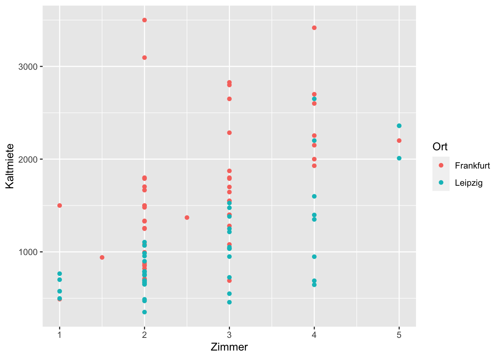
gf_point(Wohnflaeche ~ Zimmer, data = mieten, color = ~ Ort)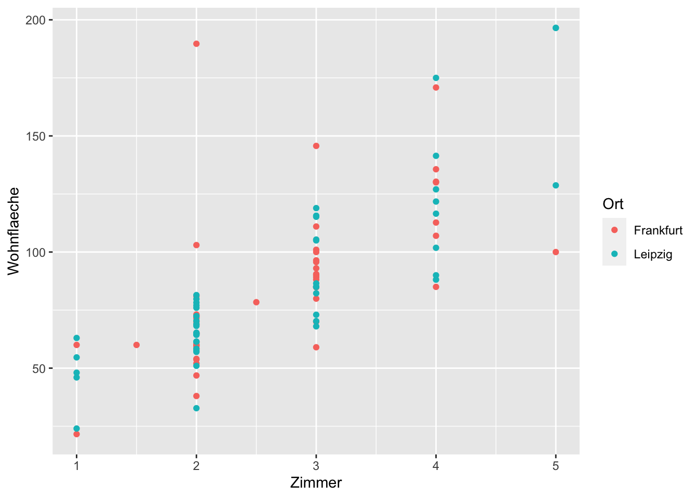
gf_point(ppqm ~ Zimmer, data = mieten, color = ~ Ort)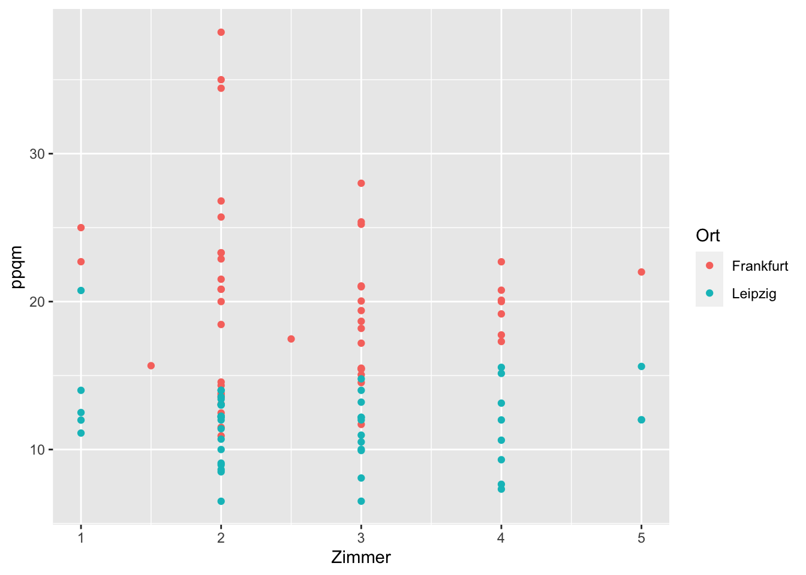
Das erste Streudiagramm zeigt: Je mehr Zimmern, desto höher die Kaltmiete. Da die Vermutung nahe liegt, dass mehr Zimmer oft mehr Wohnfläche bedeuten, wurde im zweiten Streudiagramm die Wohnfläche unter der Anzahl der Zimmer ausgegeben. Insgesamt ist hier zu erkennen, dass die Variable Zimmer einen Einfluss auf die Wohnfläche hat. So hat eine Wohnung mit 4 Zimmern fast immer mehr Wohnfläche als eine Wohnung mit 2 Zimmern. Bei einzelnen Wohnungen sind Ausreißer zu erkennen, die auf sehr große oder eher kleine Räume schließen lassen. Bei Wohnungen mit 5 Zimmern liegen die Angebote weit verteilt vor (100m²-200m²). Allerdings gibt es hier auch nur wenige Angebote. Um nun auch den Mietpreis zu betrachten, wurde im dritten Streudiagramm der Quadratmeterpreis und die Zimmeranzahl ausgegeben. Der Quadratmeterpreis ist bei mehr Zimmern überwiegend nicht wesentlich höher. Lediglich in Frankfurt sind einige Ausreißer zu erkennen.
Etage
gf_point(ppqm ~ Etage, data = mieten, color = ~ Ort)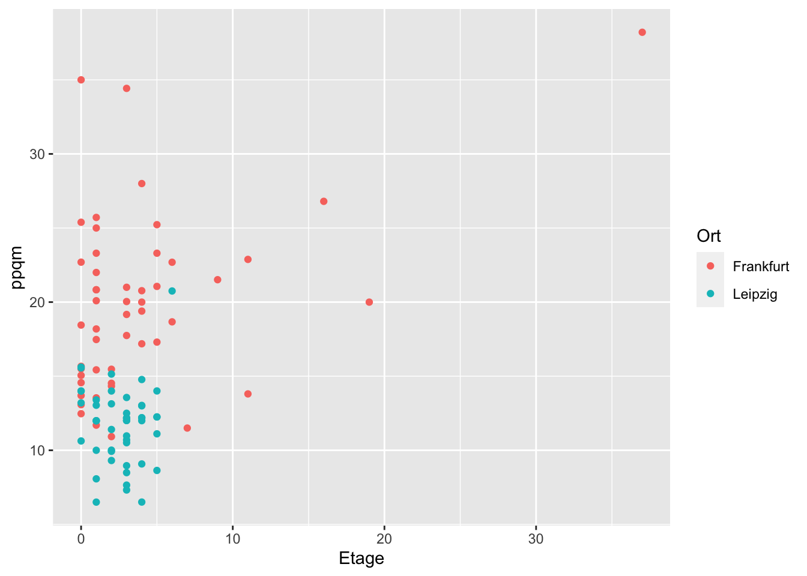
Das Streudiagramm zeigt, dass die meisten Wohnungen im 0. bis 6. Geschoss sind. Die Streuung der Mietpreise ist jedoch für diese Geschosse sehr ähnlich. Es ist daher schwer zu interpretieren, wie sich die Etage der angebotenen Wohnung auf den Mietpreis auswirkt. Es ist lediglich ein leicht steigende Tendenz für Wohnungen in Frankfurt zu erkennen.
Modellierung
Aus den zahlreichen Diagrammen des vorherigen Abschnitts der explorativen Datenanalyse konnten sich bereits diverse Zusammenhänge erkennen lassen. Dieser letzte Teil der Untersuchung der gegebenen Daten beschäftigt sich abschließend mit der Modellierung der Kaltmiete unter Verwendung der zur Verfügung stehenden Variablen wie der Wohnfläche, der Art der Heizung oder dem Vorhandensein eines Balkons. Ziel ist hierbei die Erstellung eines Modells, durch das die Variable Kaltmiete bestmöglich erklärt werden kann.
Modellierung über Durchschnittsquadratmeterpreis
Das erste Diagramm der explorativen Datenanalyse, in dem die Kaltmiete der Inserate zusammen mit deren Wohnfläche im Streudiagramm dargestellt wurden, lässt einen positiven Zusammenhang der Kaltmiete zur Wohnfläche vermuten. In einem ersten einfachen Modell, mit dem dieser Zusammenhang modelliert werden soll, kann aus den Daten beispielsweise der Durchschnitt des Quadratmeterpreises berechnet werden.
sum_wohnflaeche <- sum(~ Wohnflaeche, data = mieten)
sum_kaltmiete <- sum(~ Kaltmiete, data = mieten)
price_per_squaremeter <- sum_kaltmiete / sum_wohnflaecheDamit ergibt sich als erstes Modell für die Kaltmiete unter Verwendung der Wohnfläche als unabhängige Variable folgende Gleichung:
Kaltmiete = Wohnflaeche \cdot 15.76 € Wir betrachten das Modell, indem die berechnete Gerade in das Streudiagramm der explorativen Datenanalyse eingezeichnet wird:
pps_x = c(0, 200)
pps_y = c(0, price_per_squaremeter * 200)
gf_line(pps_y ~ pps_x, color = "blue") |>
gf_point(Kaltmiete ~ Wohnflaeche, data = mieten, color = ~ Ort) |>
gf_labs(x = "Wohnfläche in Quadratmeter",
y = "Mietpreis in Euro",
title = "Modellierung über Durchschnittspreis")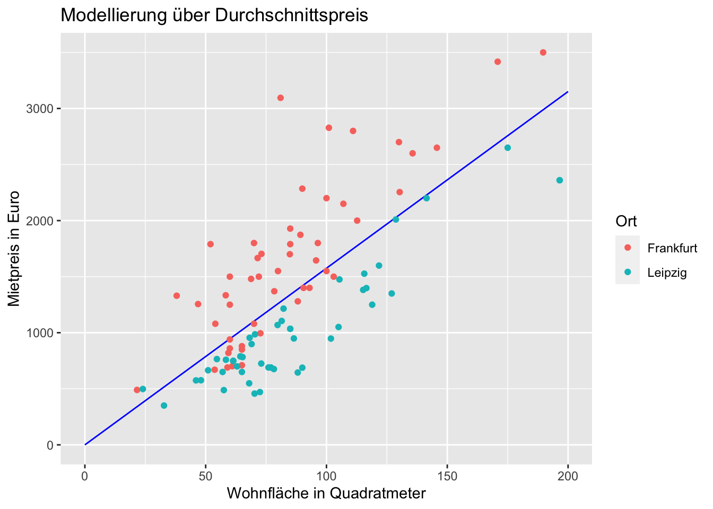
Dazu wird noch der Korrelationskoeffizient bestimmt werden.
cor_miete_flaeche = cor(Wohnflaeche ~ Kaltmiete, data = mieten)Zu sehen ist, dass die Kaltmiete zu 74.54% mit der Wohnfläche korreliert. Das Modell kann demnach bereits für einen groben Richtwert verwendet werden. Ziel ist jedoch eine noch genauere Modellierung der Kaltmiete unter Berücksichtigung der weiteren Daten.
Modellierung über die lineare Regression
Um die weiteren Variablen miteinzubeziehen, verwenden wir die lineare Regression, die mit der lm()-Funktion auf die Daten angewendet werden kann.
Wohnflaeche
Wir starten zunächst erneut mit der Kaltmiete und der jeweils dazugehörigen Wohnflaeche.
km.lm1 <- lm(Kaltmiete ~ Wohnflaeche, data = mieten)
summary(km.lm1)
Call:
lm(formula = Kaltmiete ~ Wohnflaeche, data = mieten)
Residuals:
Min 1Q Median 3Q Max
-742.4 -295.9 -123.8 345.7 1817.6
Coefficients:
Estimate Std. Error t value Pr(>|t|)
(Intercept) 24.403 129.718 0.188 0.851
Wohnflaeche 15.469 1.412 10.956 <2e-16 ***
---
Signif. codes: 0 '***' 0.001 '**' 0.01 '*' 0.05 '.' 0.1 ' ' 1
Residual standard error: 479.8 on 96 degrees of freedom
Multiple R-squared: 0.5556, Adjusted R-squared: 0.551
F-statistic: 120 on 1 and 96 DF, p-value: < 2.2e-16Mit einem Bestimmtheitsmaß von R^2 = 0.56, haben wir mit der linearen Regression allein unter Verwendung der Wonflaeche noch kein gutes Modell erzeugt.
Ort
Da zu Beginn der explorativen Datenanalyse festgestellt wurde, dass sich die Kaltmieten zwischen den beiden Orten Frankfurt am Main und Leipzig unter sonst gleichen Bedingungen bereits stark unterscheidet, soll diese zuerst in die Modellierung miteinbezogen werden.
km.lm2 <- lm(Kaltmiete ~ Wohnflaeche + Ort, data = mieten)
summary(km.lm2)
Call:
lm(formula = Kaltmiete ~ Wohnflaeche + Ort, data = mieten)
Residuals:
Min 1Q Median 3Q Max
-640.01 -279.07 36.35 188.68 1492.90
Coefficients:
Estimate Std. Error t value Pr(>|t|)
(Intercept) 325.853 98.305 3.315 0.0013 **
Wohnflaeche 15.756 1.014 15.540 < 2e-16 ***
OrtLeipzig -665.433 69.627 -9.557 1.46e-15 ***
---
Signif. codes: 0 '***' 0.001 '**' 0.01 '*' 0.05 '.' 0.1 ' ' 1
Residual standard error: 344.4 on 95 degrees of freedom
Multiple R-squared: 0.7734, Adjusted R-squared: 0.7687
F-statistic: 162.2 on 2 and 95 DF, p-value: < 2.2e-16km.lm2.coef <- coef(km.lm2)
print(km.lm2.coef)(Intercept) Wohnflaeche OrtLeipzig
325.8526 15.7562 -665.4331 Mit dem Miteinbeziehen der Indikatorvariable x2 beziehungsweise der kategorialen Variable des Ortes erhalten wir ein Bestimmtheitsmaß von R^2 = 0.77. Die Variation des Mietpreises kann also zu 78% durch den Mietpreis und dem dazugehörigen Ort erklärt werden. An der Zusammenfassung der Ergebnisse lässt sich außerdem ablesen, dass in Leipzig die Kaltmiete im Mittelwert 655,13€ billiger als in Leipzig ist. Das Modell lässt sich nun wie folgt darstellen:
\hat{y}_i = 325.85 + x1_i \cdot 15.76 -665.43 \cdot \begin{cases} \text{1}: & \text{ $x2_i = Leipzig$}\\ \text{0}: & \text{ $x2_i = Frankfurt$} \end{cases}
Wobei x1_i die Wohnflaeche und x2_i entsprechend den Wohnort darstellt.
Entsprechend dem berechneten P-Wert von 3.68 \cdot 10^(-16) kann das Ergebnis in Bezug auf den Wohnort unter Verwendung eines Signifikanzniveaus von 5\% als statistisch signifikant bezeichnet werden. Die H_0-Hypothese \mu_{Frankfurt} = \mu_{Leipzig} kann somit verworfen werden.
Grafisch erhalten wir dadurch die zwei Geraden, abhängig des Ortes:
frankfurt.x = c(0, 200)
frankfurt.y = c(km.lm2.coef[1] + km.lm2.coef[2] * 0 + km.lm2.coef[3] * 0,
km.lm2.coef[1] + km.lm2.coef[2] * 200 + km.lm2.coef[3] * 0 )
leipzig.x = c(0, 200)
leipzig.y = c(km.lm2.coef[1] + km.lm2.coef[2] * 0 + km.lm2.coef[3] * 1,
km.lm2.coef[1] + km.lm2.coef[2] * 200 + km.lm2.coef[3] * 1 )
pps_y = c(0, price_per_squaremeter * 200)
gf_line(frankfurt.y ~ frankfurt.x, color = "orange") |>
gf_line(leipzig.y ~ leipzig.x, color = "lightblue") |>
gf_point(Kaltmiete ~ Wohnflaeche, data = mieten, color = ~ Ort)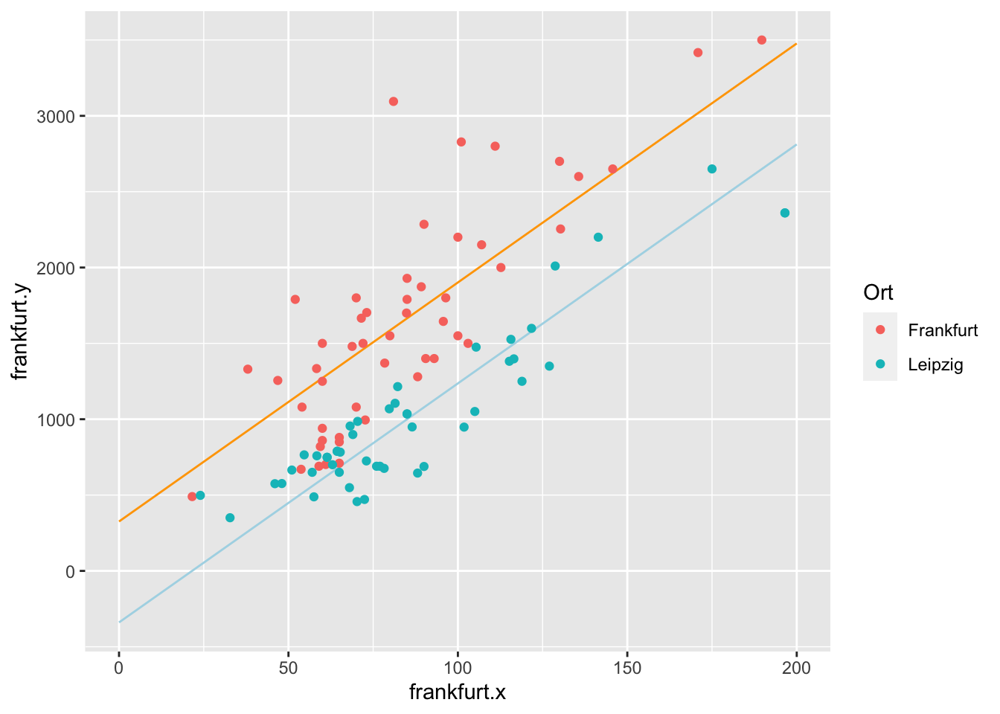
Sowohl grafisch als auch am Bestimmtheitsmaß lässt sich erkennen, dass die Modellierung über die Größe der Immobilien zusammen mit dem jeweiligen Ort einen großen Teil des Mietpreises erklären kann.
Weitere Variablen
Zuletzt werden die weiteren Variablen in die lineare Regression miteinbezogen und das daraus entstehende Modell betrachtet und interpretiert. Wir verwenden nun zusätzlich die Informationen bezüglich des Parkplatzes, der Anzahl der Zimmer, des Baujahres, das Vorhandensein eines Balkons und der Etage.
km.lm3 <- lm(Kaltmiete ~ Wohnflaeche + Ort + Parkplatz + Balkon + Baujahr +
Etage + Zimmer + Heizung, data = mieten)
summary(km.lm3)
Call:
lm(formula = Kaltmiete ~ Wohnflaeche + Ort + Parkplatz + Balkon +
Baujahr + Etage + Zimmer + Heizung, data = mieten)
Residuals:
Min 1Q Median 3Q Max
-461.26 -188.96 -42.04 160.67 766.81
Coefficients:
Estimate Std. Error t value Pr(>|t|)
(Intercept) -3620.3704 1580.1647 -2.291 0.02452 *
Wohnflaeche 16.9243 1.3807 12.258 < 2e-16 ***
OrtLeipzig -466.3345 70.2276 -6.640 3.17e-09 ***
Parkplatznein -149.0587 69.5677 -2.143 0.03511 *
Balkonnein 28.5883 69.1350 0.414 0.68031
Baujahr 2.0359 0.7735 2.632 0.01014 *
Etage 23.3075 6.7295 3.463 0.00085 ***
Zimmer -71.6654 47.1581 -1.520 0.13244
HeizungEtagenheizung 3.9650 242.2408 0.016 0.98698
HeizungFernwärme -176.2000 130.4222 -1.351 0.18041
HeizungFußbodenheizung -20.6200 126.5903 -0.163 0.87101
HeizungGasheizung 176.2957 167.9711 1.050 0.29700
HeizungHolzpelletheizung -289.8749 303.4758 -0.955 0.34229
HeizungÖl 92.0784 304.4141 0.302 0.76305
HeizungWärmepumpe 196.3236 210.3614 0.933 0.35342
HeizungZentralheizung -171.7000 125.3993 -1.369 0.17467
---
Signif. codes: 0 '***' 0.001 '**' 0.01 '*' 0.05 '.' 0.1 ' ' 1
Residual standard error: 273.8 on 82 degrees of freedom
Multiple R-squared: 0.8764, Adjusted R-squared: 0.8538
F-statistic: 38.78 on 15 and 82 DF, p-value: < 2.2e-16Zu sehen ist, dass wir unter dem Miteinbeziehen aller Informationen, die zur Verfügung stehen, dennoch nur ein Bestimmtheitsmaß von R = 0.85 erreichen. Das bedeutet, dass trotz aller Daten, die Variation der Mietpreise nur zu ca. 85\% erklärt werden kann, was entsprechend 15\% unerklärt lässt.
Wie bereits in der vorherigen linearen Regression zu sehen war, hat sowohl der Ort als auch die Wohnfläche einen starken Einfluss auf den Wohnpreis. Beide Attribute sind unter einem geringen Signifikanzniveau von nur \alpha = 0.001 immer noch statistisch signifikant. Dass der Ort und die Größe der Wohnung einen erheblichen Einfluss auf den Mietpreis nehmen, ist nicht weiter überraschend. Unter dem gleichen Signifikanzniveau statistisch signifikant ist ebenso die Etage, in der die Wohnung liegt. Wir sehen hier im Mittel einen Anstieg des Mietpreises um ca. 23,00€ pro Etage. Begründen lässt sich dies eventuell durch die bessere Aussicht in den oberen Etagen und die Wahrscheinlichkeiten auf Wohnungstypen wie Penthäuser in oberen Etagen höher ist.
Unter einem Signifikanzniveau von \alpha = 0.05 statistisch relevant ist sowohl das Vorhandensein eines Parkplatzes als auch das Baujahr. Ist kein Parkplatz vorhanden, so ist der Mietpreis im Mittel ca. 150,00€ billiger. Da Parkplätze insbesondere in Großstädten, aufgrund der häufig wenigen Parkmöglichkeiten, eine wichtige Rolle spielen ist verständlich. Mit dem Baujahr steigt der Mietpreis im Mittel um ca. 2,00€. Da neuere Immobilien entsprechend mit effizienteren Bauweisen, geringen Energieverbräuchen und modernerem Aussehen und benötigen zumeist geringe Wartungsarbeiten gebaut werden, überrascht es nicht weiter, dass das Baujahr einen Einfluss auf den Mietpreis nimmt.
Anhand der einzelnen P-Werte für die jeweiligen Attribute der Wohnungen können wir außerdem ablesen, welche der Informationen für die Modellierung des Mietpreises nicht signifikant ist. Dazu zählt zunächst die Art der Heizung, von welcher keiner der aufgelisteten Merkmalsausprägungen im Bereich des Signifikanzniveaus liegt. Dass die Art der Heizung einen Einfluss auf den Mietpreis besitzt, kann durch die uns zur Verfügung stehenden Daten also nicht bestätigt werden.
Ebenso zeigen die Daten keinen statistisch signifikanten Zusammenhang zwischen der Anzahl der Zimmer und den Mietpreisen. Eine mögliche Begründung ist, dass weniger die Aufteilung der Wohnung in n verschiedene Zimmer, sondern die Größe der Wohnfläche für den Mietpreis relevant ist. Beispielsweise kann sowohl eine besonders große Wohnung als auch eine kleinere Wohnung aus insgesamt drei Zimmern bestehen. Der Mietpreis wird bei der größeren Wohnung dennoch tendenziell größer sein, wie die Daten bestätigen, da die Anzahl der Zimmer nichts über die Größe der Wohnung aussagt.
Auch für das Vorhandensein eines Balkons lässt sich kein Einfluss auf den Mietpreis feststellen. Mit einem P-Wert von p = 0.68 ist hier jegliches Signifikanzniveau überschritten. Begründet kann dies dadurch sein, dass keine weiteren Informationen zu dem jeweiligen Balkon gegeben ist. Wichtig könnte eventuell die Größe des Balkons, die Aussicht oder weitere Faktoren sein, die hier nicht näher spezifiziert sind.
confint(km.lm3) 2.5 % 97.5 %
(Intercept) -6763.8212789 -476.919434
Wohnflaeche 14.1777598 19.670888
OrtLeipzig -606.0396286 -326.629395
Parkplatznein -287.4509890 -10.666461
Balkonnein -108.9433026 166.119836
Baujahr 0.4971043 3.574731
Etage 9.9204314 36.694648
Zimmer -165.4778752 22.147140
HeizungEtagenheizung -477.9291640 485.859142
HeizungFernwärme -435.6513022 83.251224
HeizungFußbodenheizung -272.4485677 231.208469
HeizungGasheizung -157.8522989 510.443644
HeizungHolzpelletheizung -893.5848651 313.835146
HeizungÖl -513.4982048 697.654927
HeizungWärmepumpe -222.1521718 614.799343
HeizungZentralheizung -421.1590358 77.759091Betrachten wir Abschließend die Konfidenzintervalle, so lässt sich sagen, dass die Quadratmeteranzahl zu 95% eine Auswirkung zwischen 14,18€ und 19,67€ pro auf den Mietpreis in der Population hat. Der Unterschied zwischen Frankfurt und Leipzig liegt mit gleicher Wahrscheinlichkeit im Intervall von -606,04€ und -326,63€.
Zusammenfassung
Das Ziel dieser Fallstudie war, die Kaltmieten von Frankfurt am Main und Leipzig zu vergleichen und zu modellieren. Dazu wurden innerhalb der explorativen Datenanalyse Einflussfaktoren ermittelt und diese anschließend in statistische Modelle mit aufgenommen. Die Modelle wurden anschließend diskutiert und bewertet. Die explorative Datenanalyse zeigt, dass besonders die Wohnfläche und der Ort einen signifikanten Einfluss auf die Kaltmiete haben. Daher wurde bei der weiteren Analyse immer der Quadratmeterpreis sowie die Unterscheidung der beiden Städte mit aufgenommen. Die Variablen Baujahr, Parkplatz und Balkonzeigen ebenso einen direkten Einfluss auf die Kaltmiete sowie den Quadratmeterpreis. Die Variable Heizung lässt keine direkte Interpretation über den Einfluss auf die Kaltmiete zu. Dafür ist hier die Streuung zu groß. Ebenso kann bei der Variable Etage kein direkter Einfluss erkannt werden.
Da in der explorativen Analyse schon ein starker Zusammenhang zwischen Kaltmiete und Wohnfläche erkannt werden kann, wird zunächst die Kaltmiete anhand der Wohnfläche multipliziert mit dem durchschnittlichen Quadratmeterpreis modelliert. Anschließen wird durch eine lineare Regression die Kaltmiete mit der abhängigen Variable Wohnfläche modelliert. Um die Genauigkeit des Modells zu steigern, wird das Modell um den Ort ergänzt, was das Bestimmtheitsmaß von R² = 0.56 auf R² = 0.77 erhöht. Im finalen Modell werden alle Variablen in eine lineare Regression mit aufgenommen. Dieses Modell erreicht ein Bestimmtheitsniveau von R² = 0.85, was es zu dem genauesten Modell dieser Arbeit macht. Die statistisch signifikantesten Variablen sind Wohnfläche, Ort und Etage (Siginifikanzniveau \alpha = 0.001). Statistisch relevant sind außerdem die Variablen Parkplatz und Baujahr (Siginifikanzniveau \alpha = 0.05). Die Anzahl der Zimmer und das Vorhandensein des Balkons haben nach diesem Modell kaum Einfluss auf die Kaltmiete. Im Vergleich zur explorativen Datenanalyse wurden im Modell abweichende Einflussfaktoren wie zum Beispiel Etage bekannt, die zunächst unbedeutender bewertet wurden. Das finale Modell kann die Varianz der Kaltmiete mit den vorhandenen Daten zu ca. 85% erklären. Um das Modell zu verbessern, könnten weitere Variablen hinzugezogen werden und der Datensatz um weitere Beobachtung ergänzt werden.